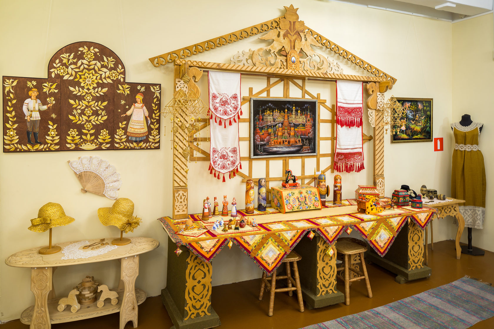
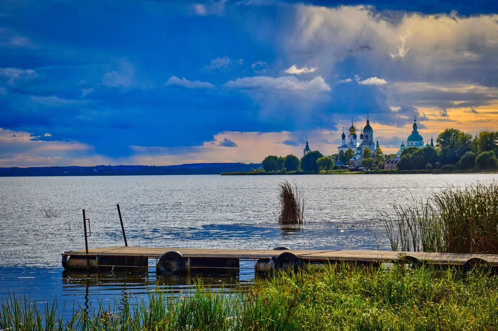
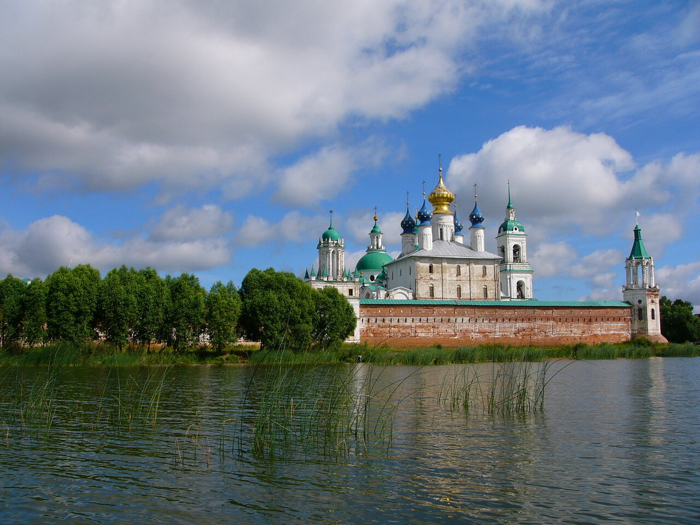

Ростов Великий - город с богатой историей и неповторимым очарованием. Здесь вас ждут живописные улицы, старинные храмы и монастыри, величественные кремлевские стены, а также уютные парки и скверы. Прогуляйтесь по мощеным улочкам, полюбуйтесь красотой Спасо-Яковлевского монастыря, посетите Ростовский кремль - один из самых красивых и впечатляющих архитектурных ансамблей России.
Достопримечательности Ростова Великого
Ростов Великий – город с богатой историей и неповторимым шармом, расположенный на севере России. Он известен как "жемчужина Золотого кольца" и манит туристов своей архитектурой, историей и атмосферой старины. Основанный в 10 веке, Ростов Великий хранит память о временах Древней Руси. Его сердце - величественный кремль, восхищающий своей красотой и мощью. Помимо кремля, город богат на храмы и монастыри, каждый из которых обладает своей уникальной историей и архитектурным стилем. Прогуливаясь по узким улочкам, вы погружаетесь в атмосферу спокойствия и размеренности, отдыхая от городской суеты. Ростов Великий – идеальное место для умиротворяющего отдыха и путешествия вглубь веков.
- Ростовский кремль
- Спасо-Яковлевский мужской монастырь
- Музей финифти
- Успенский собор
- Музей народного творчества
- Озеро Неро: Крупнейшее озеро в Ярославской области
- Лесная дача
- Ростовский историко-архитектурный музей-заповедник
- Церковь Иоанна Богослова
- Воскресенский собор
1. Ростовский Кремль
Ростовский кремль – это впечатляющий архитектурный ансамбль, расположенный в центре города Ростова Великого. Он был построен в XVI веке и представляет собой уникальный образец русского зодчества того времени.

Ростовский кремль был построен в XVI веке, в период острой необходимости защиты русских земель от нападений литовских и крымских ханств. Первоначально на месте кремля стояла деревянная крепость, построенная в XII веке. В XVI веке крепость была перестроена из камня, что сделало ее неприступной для вражеских войск.
Роль кремля в истории России: Кремль играл важную роль в защите северо-восточных земель России. В его стенах проводились важные собрания и советы, где принимались решения, определявшие судьбу России. Кремль стал символом мощи и величества Ростовской земли.

Что стоит посмотреть в Ростовском кремле:
- Успенский собор: Главный храм кремля, построенный в 1508-1512 годах. Он известен своими уникальными фресками и иконами.
- Колокольня: Высокая и величественная колокольня, возведенная в 1670 году. С ее вершины открывается панорамный вид на город.
- Кремлевские стены и башни: Мощные стены и башни, которые когда-то служили защитой от врагов.
- Музей истории Ростовского кремля: В музее представлены экспонаты, рассказывающие о истории кремля и города.
Современность:
В XX веке Ростовский кремль стал музеем-заповедником, где хранится богатое историческое и культурное наследие города. Он является одним из самых популярных туристических объектов России, привлекающим туристов со всего мира. Посещение Ростовского кремля – это возможность прикоснуться к истории, окунуться в атмосферу древней Руси и полюбоваться неповторимой красотой архитектурного ансамбля.
2. Спасо-Яковлевский мужской монастырь
Спасо-Яковлевский мужской монастырь – это одна из главных достопримечательностей Ростова Великого, знаменитый центр духовной жизни и архитектурный памятник, который привлекает паломников и туристов со всей России и из-за рубежа.

История монастыря:
Основан в 14 веке преподобным Яковом, который пришел в Ростов Великий из Москвы и построил небольшую келью на берегу озера Неро. В 15 веке монастырь был разрушен татарами, но быстро восстановлен. В 17 веке монастырь расширился и стал одним из самых значительных духовных центров России.

Архитектурный ансамбль монастыря представляет собой уникальное сочетание разных стилей: древнерусского, барокко, классицизма. Главный храм - Спасо-Преображенский собор - был построен в 17 веке и является шедевром русского зодчества. На территории монастыря также находятся трапезная, колокольня, кельи и другие постройки.
Современность:
В настоящее время Спасо-Яковлевский монастырь является действующим мужским монастырем, где проживают и служат монахи. Он также является популярным туристическим объектом, привлекающим паломников и любителей истории и архитектуры.
Посещение Спасо-Яковлевского монастыря - это возможность окунуться в атмосферу духовности и спокойствия, полюбоваться красотой старинной архитектуры и почтить память преподобного Якова, основателя монастыря.
3. Музей финифти
Музей финифти в Ростове Великом – это уникальное место, посвященное древнему искусству финифти. Он расположен в центре города, в здании бывшего купеческого дома, и представляет собой настоящий музей-мастерскую.
История финифти:
Финифть - это древний вид ювелирного искусства, возникший в Византии в VII-VIII веках. В Россию финифть пришла в XVI веке, и с тех пор она стала важной частью местной культуры. Ростов Великий стал одним из главных центров финифти в России, где создавались уникальные изделия, известные во всем мире.
Коллекция музея:
В музее представлена богатая коллекция изделий из финифти, созданных мастерами Ростова Великого и других городов России.
В коллекции музея вы можете увидеть:
- Иконы: Финифть использовалась для украшения икон с XIV века. В музее представлены иконы разных эпох и стилей, украшенные финифтью.
- Украшения: Финифть часто используется в ювелирном искусстве. В коллекции музея представлены ожерелья, серьги, браслеты, броши, украшенные финифтью.
- Предметы быта: Финифть также использовалась для декорирования предметов быта. В коллекции музея есть шкатулки, вазы, чайные пары, украшенные финифтью.
Мастер-классы:
В музее проводятся мастер-классы по финифти, где посетители могут попробовать свои силы в этом искусстве.
Что делает музей уникальным:
Музей финифти в Ростове Великом - единственный в России музей, посвященный этому искусству. Он сохраняет и пропагандирует традиции финифти, делая ее доступной широкому кругу людей.
Посещение музея финифти в Ростове Великом - это уникальная возможность узнать больше об этом древнем искусстве, полюбоваться красотой изделий из финифти и попробовать свои силы в мастер-классе.
4.Успенский собор
Успенский собор в Ростове Великом – это один из самых красивых и величественных храмов России, главный собор Ростовского кремля, воплощающий в себе красоту и мощь древнерусского зодчества.
История собора:
На месте нынешнего собора в XII веке был построен деревянный храм. Однако, в 1508 году он был разрушен пожаром. В 1508 году начинается строительство нового храма из камня, которое завершилось в 1512 году. Собор построили в стиле древнерусского зодчества, используя традиционные приемы и материалы. С момента постройки собор стал главным храмом Ростовской епархии и важным духовным центром северо-восточной Руси.

Архитектура собора:
Собор построен в стиле древнерусского зодчества, с характерными чертами - высокими куполами, яркими фресками, мощными стенами. Главной особенностью собора является его пять глав, символизирующих Христа и четырех евангелистов. В интерьере собора находятся уникальные фрески XVI века, изображающие библейские сюжеты.
Святыни собора:
В соборе хранится несколько святынь, включая чудотворную икону "Утоли моя печали", которая привлекает паломников со всей России.
Современность:
Успенский собор является действующим храмом, где проходят богослужения. Он также является популярным туристическим объектом, привлекающим людей, заинтересованных в искусстве, истории и духовности.
Посещение Успенского собора - это возможность окунуться в атмосферу древней Руси, полюбоваться красотой архитектуры, увидеть уникальные фрески и почтить память святых.
5. Музей народного творчества
Музей народного творчества в Ростове Великом - это удивительное место, которое позволяет окунуться в мир традиций и промыслов этого старинного города. В его стенах хранятся не только экспонаты, но и сама душа Ростова, его история, мастерство и талант его жителей.
Что вы увидите в музее:
- Традиционные промыслы: Вы познакомитесь с богатой историей финифти, вышивки, кружевоплетения, гончарства, деревянной резьбы и других видов народного искусства.
- Экспонаты: В музее представлены работы мастеров Ростова Великого и соседних регионов, сохраняющие уникальные техники и стили.
- Интерактивные экспозиции: Музей предлагает интерактивные экспозиции, где можно попробовать свои силы в традиционных ремеслах и узнать больше о процессе создания изделий.
Почему стоит посетить музей:
- Погружение в историю: Музей народного творчества помогает понять и прочувствовать дух Ростова Великого и традиции его жителей.
- Знакомство с талантами: Вы увидите необычайные работы мастеров и узнаете об их мастерстве, таланте и преданности делу.
- Вдохновение: Посещение музея народного творчества может вдохновить вас на собственное творчество и позволить раскрыть свой потенциал.
Музей народного творчества в Ростове Великом - это место, где история встречается с современностью, где искусство соединяется с душой города. Посетите его, чтобы окунуться в мир красоты и мастерства, чтобы узнать больше о традициях Ростова Великого и прочувствовать его неповторимую атмосферу.
6. Озеро Неро: Крупнейшее озеро в Ярославской области
Озеро Неро в Ростове Великом — это не просто водоем, а настоящая жемчужина города, и важная часть его истории и души.
История озера:
Озеро Неро существует уже более 10 тысяч лет, и в течение веков играло важную роль в жизни Ростова Великого. На берегах озера возник город, и озеро было важным источником пищи, транспорта и торговли. В озеро впадает река Устье, а вытекает река Которосль, что делает его частью водной системы Верхневолжья.
Красота и природа:
Озеро Неро - красивое и спокойное место, окруженное лесами и лугами. Озеро богато рыбой, что делает его популярным местом для рыбалки. На берегу озера расположены пляжи, где можно отдохнуть от городской суеты и полюбоваться красотой природы.
Озеро в культуре:
Озеро Неро вдохновляло писателей, художников и композиторов на создание произведений искусства. В окрестностях озера расположен Спасо-Яковлевский монастырь - один из самых известных монастырей России. В лето на озеро приезжают туристы со всей России, чтобы отдохнуть на природе, порыбачить и полюбоваться красотой озера.
Озеро Неро - это важная часть истории и души Ростова Великого, место, где можно отдохнуть от городской суеты и полюбоваться красотой природы.
7. Лесная дача
Лесная дача в Ростове Великом – это не просто лес, а удивительное место для прогулок и отдыха, где можно погрузиться в атмосферу спокойствия и красоты природы.

Что делает Лесную дачу уникальным местом:
Расположение: Лесная дача расположена на берегу озера Неро, в непосредственной близости от исторического центра Ростова Великого. Сосновый бор: Лес состоит преимущественно из сосен, что придает ему неповторимый аромат и успокаивающую атмосферу. Чистый воздух: Благодаря соснам и озеру Неро в Лесной даче очищенный и свежий воздух, что делает ее идеальным местом для прогулок. Тишина и спокойствие: В Лесной даче нет шума и суеты города, что позволяет отдохнуть от городской жизни и насладиться спокойствием.
Чем можно заняться в Лесной даче:

- Прогулки: Можно пройтись по лесным тропинкам, наслаждаясь красотой природы.
- Отдых на берегу озера: Можно посидеть на берегу озера Неро, полюбоваться водной гладью и подышать свежим воздухом.
- Рыбалка: В озеро Неро можно порыбачить, что привлечет любителей рыбалки.
- Велоспорт: Лесная дача - отличное место для велопрогулок, где можно насладиться красотой окрестностей.
Лесная дача - это не просто место для прогулок, это отличное место для отдыха, где можно насладиться красотой природы и отключиться от суеты города.
8. Ростовский историко-архитектурный музей-заповедник
Ростовский историко-архитектурный музей-заповедник - это уникальный комплекс, включающий в себя не только исторические здания, но и живописные окрестности. Он расположен в городе Ростов Великий, на берегу озера Неро, и представляет собой сокровищницу истории и культуры Древней Руси.
История:
Основан в 1918 году, вначале был "Ростовским музеем древностей", а затем получил нынешнее название. В состав музея-заповедника входят храмы, монастыри, церкви, кремль, усадьбы, исторические памятники и другие объекты, расположенные как в самом городе, так и в его окрестностях.
Архитектура:
Ростовский кремль: построен в XII веке, один из самых древних в России. Он имеет четыре башни, внутри расположен Спасо-Яковлевский монастырь. Спасо-Яковлевский монастырь: основан в XIV веке, является одним из главных памятников русской архитектуры. В нем хранится знаменитая "Ростовская Филаретовская икона Божьей Матери". Успенский собор: построен в XVI веке, один из самых больших и красивых храмов в Ростове. Его архитектура отличается ярким украшением и богатством росписи. церковь Иоанна Богослова на Городецкой: построена в XIV веке, отличается оригинальной архитектурой и прекрасной росписью.
Ценности:
В музее-заповеднике хранится огромное количество археологических находок, икон, старинных книг, одежды, и других предметов быта и культуры. Коллекция икон является особенной гордостью музея. Экспозиции посвящены истории Ростова Великого, русской архитектуре, церковному искусству.
Посещение:
Ростовский историко-архитектурный музей-заповедник является одним из самых популярных туристических объектов в России. В музее проводятся экскурсии, выставки, концерты, и другие мероприятия. Рекомендуем запланировать поездку в Ростов Великий и посетить этот удивительный музей-заповедник.
Дополнительно:
В Ростове Великом также расположен Ростовский государственный историко-архитектурный и художественный музей-заповедник, который включает в себя еще более широкий круг объектов и ценностей. Ознакомьтесь с сайтом музея для получения более подробной информации о часах работы, билетах, и программах экскурсий.
Ростовский историко-архитектурный музей-заповедник - это не просто музей, это удивительный мир истории и культуры, который оставляет незабываемые впечатления.
9. Церковь Иоанна Богослова
Церковь Иоанна Богослова — это не просто храм, а настоящий шедевр древнерусской архитектуры, визитная карточка Ростова Великого. Она расположена на территории Ростовского кремля, возвышаясь над городом своей красотой и величием.
История:
Построена в 1191 году, как часть Ростовского кремля, в честь Иоанна Богослова. Считается одним из первых памятников Владимиро-Суздальского зодчества, предшественником знаменитых храмов Андрея Рублева. Пережила множество исторических событий: пожары, нашествия, перестройки. В 17 веке, во время реставрации, получила свою нынешнюю форму с шатровой колокольней, придающей ей неповторимый силуэт.
Архитектура:
Построена в стиле владимиро-суздальской архитектуры. Является крепостным храмом с мощными стенами и массивным куполом. Отличается оригинальной композицией с тремя главными частями: храм, трапезная и колокольня. Шатер колокольни является доминирующим элементом силуэта, придавая церкви уникальность. Богатый декор с элементами "кокошников" и "килевидных арочек" придает храму величественность.
Ценности:
Внутри храма сохранились ценные фрески и иконы 17-18 веков, созданные мастерами Ростовской школы иконописи. Церковь является историческим памятником, тесно связанным с историей Ростова Великого.
Почему стоит посетить:
Восхититься величественной архитектурой, символом русской духовности и исторического наследия. Погрузиться в атмосферу древнерусской культуры, почувствовать дух времени. Увидеть редкие фрески и иконы, расположенные внутри храма. Сделать яркие фотографии с замечательным видом на город.
Церковь Иоанна Богослова — это не просто храм, а символ Ростова Великого, который привлекает туристов со всего мира.
10. Воскресенский собор
Воскресенский собор – это не просто храм, а символ Ростова Великого, его сердце и визитная карточка. Он величественно возвышается на берегу озера Неро, являясь одним из самых значимых архитектурных памятников России.
История:
1160 год: Строительство собора было начато князем Юрием Долгоруким. 1167 год: Собор был освящен и стал кафедральным собором Ростовской епархии. 16-17 века: Многочисленные перестройки и реставрации, которые добавили собору черты московского зодчества. 18 век: В результате пожара собор был серьезно поврежден, но вскоре восстановлен. 1917 год: После революции собор был закрыт, а его ценности разграблены. 1991 год: Собор был возвращен Церкви и началась его реставрация. 1997 год: Реставрация была завершена, и собор вновь открылся для верующих.
Архитектура:
Стиль: Собор представляет собой уникальный синтез белокаменной архитектуры XII века и московского зодчества XVII-XVIII веков. Купола: Семь шатровых куполов, которые символизируют семь таинств Церкви. Внешняя отделка: Богато украшенные фасады с арками, карнизами, пилястрами и кокошниками. Внутренняя отделка: Стены собора расписаны фресками, а иконостас представляет собой произведение искусства.
Легенды:
По преданию: Основание собора было освящено самим святым Николаем Чудотворцем. Существует легенда: О том, что в соборе хранится чудотворный образ Богородицы, который помог спасти город от нашествия татар.
Значение:
Воскресенский собор – это не просто храм, а исторический памятник, символ веры и духовной жизни. Он является местом паломничества и духовного просвещения, оживляя историю Ростова Великого и вдохновляя посетителей.